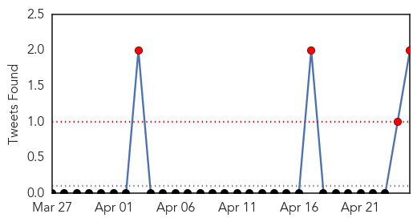

Influenza
30-Day Web Trend
3 alerts, 5 warnings

30-Day Twitter Trend
4 alerts, 0 warnings

Article Locations

Article Confidences

Top Articles:
- 0.997
- Otago Daily Times Online News : Otago, South Island, New Zealand & International News
- 0.979
- 'No indication of person-to-person transmission' in NRV illness, officials say
- 0.979
- 'No indication of person-to-person transmission' in NRV illness, officials say
- 0.932
- UPDATE: Four hospitalized with mysterious illness discharged from hospital
- 0.915
- Fourth bird flu infection: CDC
- 0.866
- Free flu shots available from may in Thailand – BorneoPost Online
- 0.846
- CDC confirms 4th case of imported H7N9 influenza
- 0.514
- National Infant Immunization Week Recognizes Value of Immunizations in State
Top Tweets:
- 0.680
- MT FluFactFriday: While H1N1 viruses have predominated overall this season, right now influenza B viruses are the most common.
- 0.646
- FluFactFriday: While H1N1 viruses have predominated overall this season, right now influenza B viruses are the most common nationally.
Ebola
30-Day Web Trend
0 alerts, 10 warnings

30-Day Twitter Trend
0 alerts, 0 warnings

Article Locations

Article Confidences

Top Articles:
Top Tweets:
- 0.893
- RT: WHO says epi situation in Guinea ebola outbreak is improving; four locations past 1 incubation period without a case h…